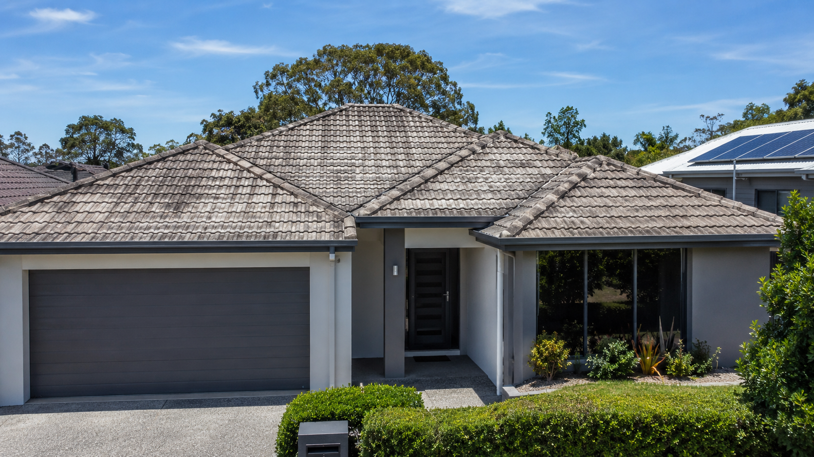
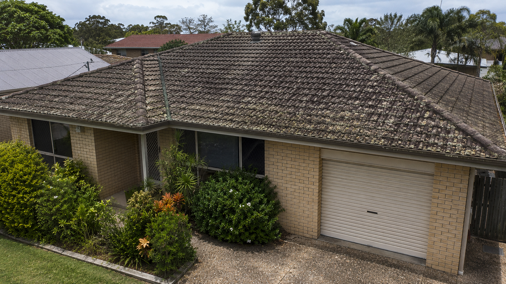
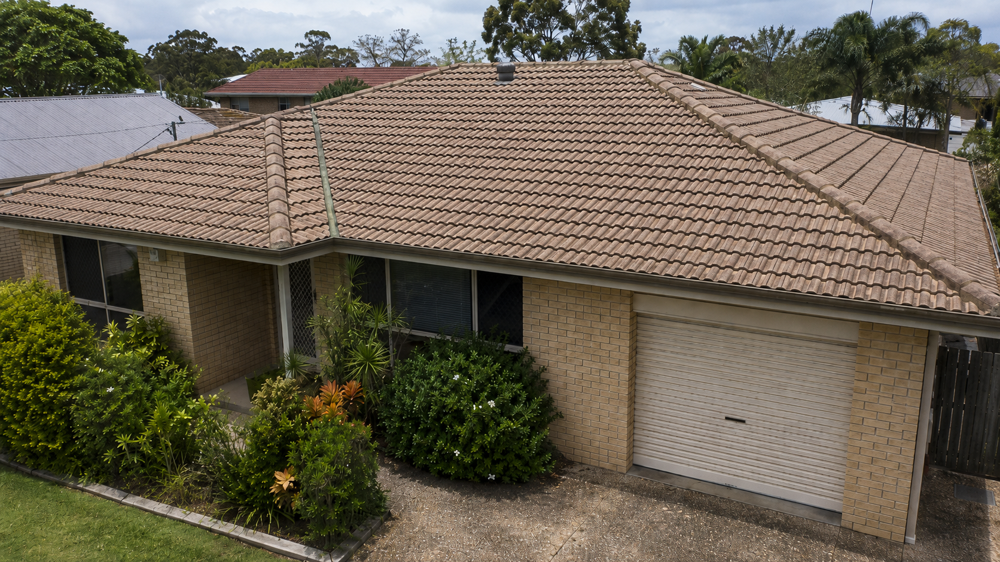
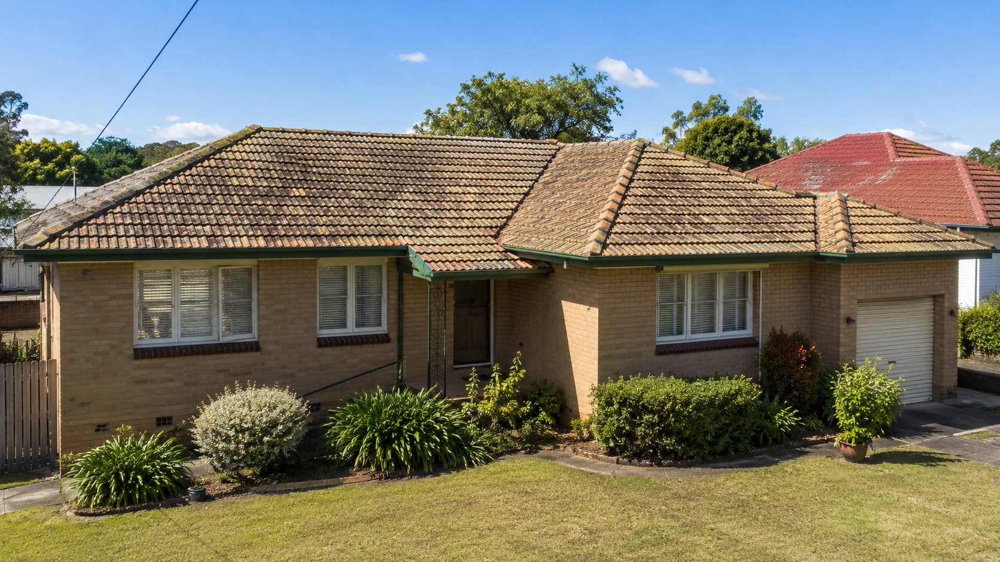

Service · Replacement
Roof replacement.
A new roof is a structural decision, not just a finish decision. We treat replacement as the moment to fix the things a restoration could only cover — underlay, ventilation, insulation interface, and the small details that determine how the next thirty years will go.

When replacement is the right call
The substrate, not just the surface, is at end of life.
If the tiles are crazed and splitting, the metal sheets are perforating, the battens are soft, or the home has been re-roofed once already with no underlay, restoration is no longer the honest answer. Replacement is the right call when fixing the surface would leave the layer below to keep failing.
- Multiple tile or sheet replacements per year, with the failure pattern spreading.
- No sarking or underlay beneath the existing roof, in a climate that needs one.
- Persistent condensation, ventilation issues, or warm-roof problems that the surface cannot fix.
- An extension or renovation that requires the roofline to be re-worked anyway.
- A heritage roof where the original material has reached the end of its serviceable life.
Restoration vs replacement
The honest comparison.
We have written this the way we explain it in person. It is the same conversation, just on the page.
| Consideration | Restoration | Replacement |
|---|---|---|
| What is replaced | Surface coating, ridge bedding, pointing, and worn flashings. | Tiles or sheets, underlay, battens where needed, and all flashings. |
| What is kept | Tiles or sheets, battens, structural timbers. | Rafters and structural timbers (replaced only if found to be unsound). |
| Disruption inside | Effectively none. | Minor — one to several days with the roof open in stages. |
| Time on site | Three to five working days for a typical home. | One to three weeks depending on size and material. |
| Right when | The substrate is sound and the surface has aged. | The substrate has reached end of life or never had underlay. |
Material options
Three honest paths.
There are more options than these. These are the three we recommend for the homes we typically work on. The visit narrows it down to one.
Concrete tile
Heavy, long-lived, and forgiving of imperfect substrate. The right answer for homes originally roofed in tile, where matching the profile matters.
Metal — standing seam
Light, modern, and excellent on lower pitches. Pairs well with contemporary architecture and renovations where the roofline is being redrawn.
Terracotta tile
For heritage homes where the original character of the roof is part of the home’s value. Slower to install, but irreplaceable when the architecture asks for it.
Project process
Four phases, named on the quote.
Each phase has a defined scope, a defined finish point, and a sign-off before the next begins.
Survey & scope
The roof is measured, the substrate is inspected from inside the roof space, and the structural condition is recorded.
Strip & prepare
The existing roof is stripped in stages so the home is never fully exposed. Battens, underlay, and flashings are renewed.
Install new roof
Tiles or sheets are installed to the manufacturer specification and the home’s actual conditions. Ventilation is built in, not retrofitted.
Finish & clean
Gutters, fascias, downpipes, and the site are cleaned. The homeowner receives a complete close-out file with photographs.
Before & after
A recent replacement, in two photographs.
Same home, before stripping and after final clean. Underlay, flashings, and ridge work were all renewed in between.



FAQ · replacement
Questions homeowners ask before booking a replacement.
If something is missing, the visit is the right place to ask.
How long does the home stay watertight during replacement?
The entire time. The roof is stripped in sections, never as a whole, and weather covers are kept on site for any forecast change.
How long will the new roof last?
Material warranties typically run decades. Installation is what determines whether the warranty is ever needed. The visit is where we walk through both.
Will the inside of the home be affected?
Minimally. Most homes are surprised by how little dust enters. We use internal protection over ceiling cavities and brief the household about each phase.
Can the existing roof structure carry a different material?
Sometimes, but not always. The survey confirms whether the structure suits a heavier or lighter material. If it does not, the quote includes the structural work, not a workaround.
What about gutters and downpipes?
If they are at the end of their life, we include them in the quote. If they have years left, we leave them and tell you. We do not replace things that do not need replacing.
Next step
A replacement is a long decision. The visit is the short one.
If you are weighing replacement, the most useful thing is a careful walk of the roof with someone who has no incentive to push you in either direction. That is what the first visit is.
Book a Roof Visit